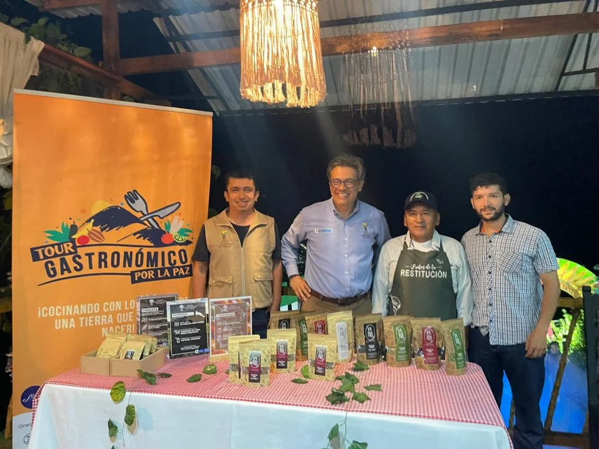
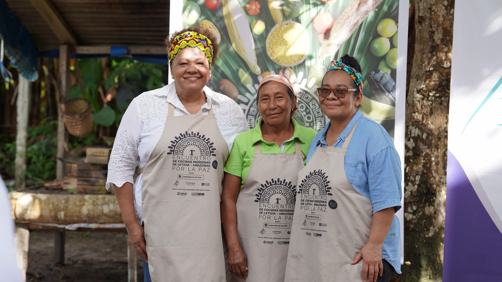
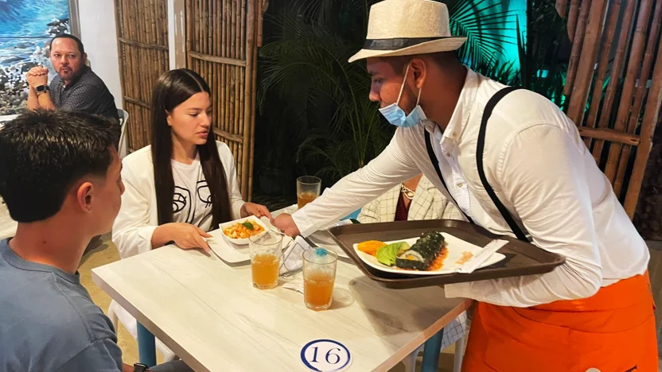
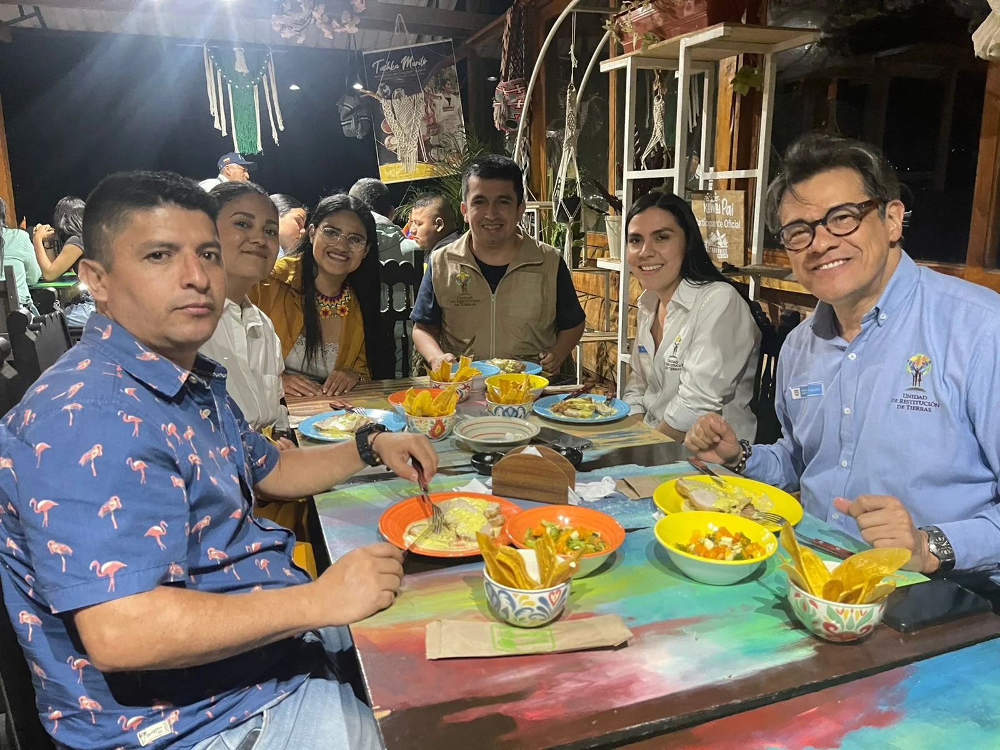

Sobre la experiencia
Conoce el lugar
El Tour Gastronómico por la Paz fue una iniciativa desarrollada para utilizar la gastronomía como un espacio de encuentro y reconocimiento de diferentes sabores y productos del territorio. La propuesta vinculó la comida con elementos sociales y culturales de la región.
Aunque corresponde a una actividad realizada en una fecha específica, su referencia resulta interesante para comprender cómo la gastronomía puede servir como herramienta para fortalecer la identidad local y generar espacios de encuentro entre diferentes comunidades.



Información para visitantes. La información turística puede cambiar. Confirma condiciones de acceso, seguridad, horarios, precios y disponibilidad con fuentes oficiales o prestadores locales antes de desplazarte.